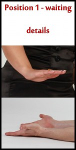
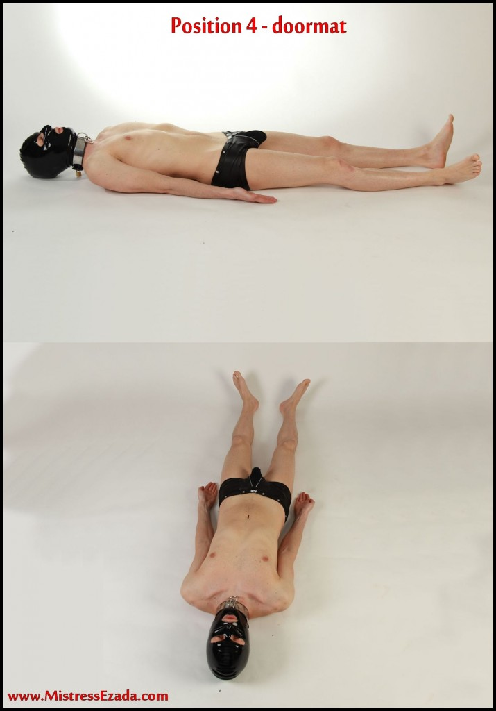
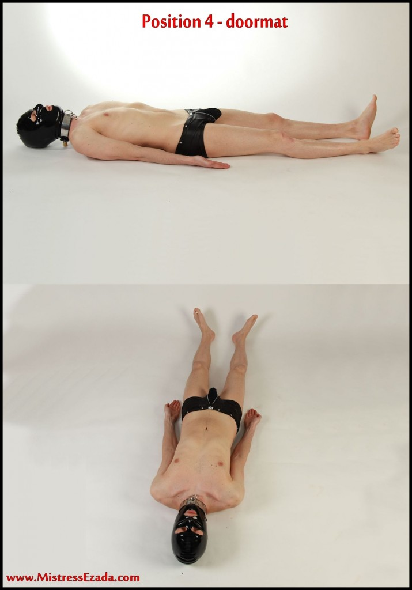
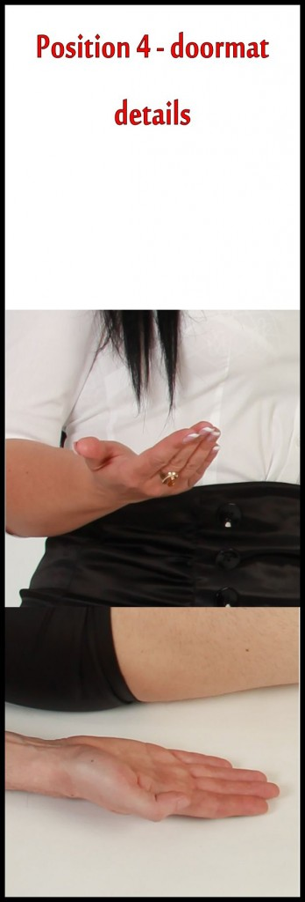
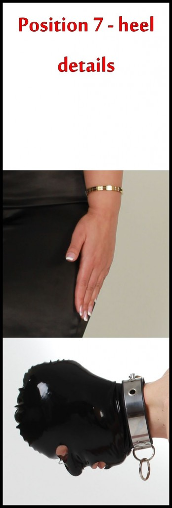
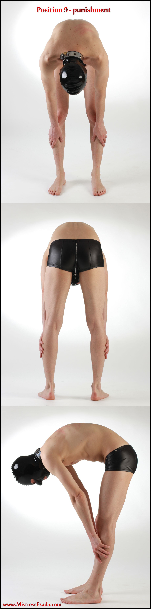
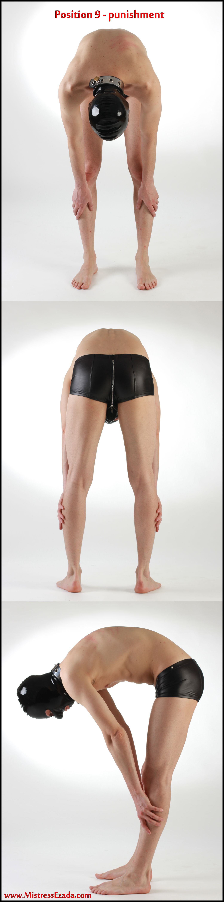

Introduction
People often ask me about communication. How important that is to Me. Well, it sure is. In fact I think it is the most imporatant things of them all. Without communication there is no interaction. Without interaction, there is no Femdom.
Now in Femdom, the communication is mainly a top/down thing. The Domme acts and the slave reacts. But not only, the slave also communicates with his Mistress. Even if he is not talking. Constantly he does. His body speaks to her. If she is able to understand that means.

But let´s start with the Mistress first. Naturally her communication will be giving orders mainly. And it is of such utmost importance that the slave understands those correctly and then immediately reacts to them. I really cannot stress this point enough. It is the basis of everything. Mistress and slave will only be able to reach this ultimate goal of total power exchange if this basic understanding is there and works.
So for the sake of enhancing the interaction of Mistress and slave I have put together a manual of basic orders that I think are crucial for every Domme/sub relationship. This is not just a play for a session in a dungeon. It is for real. For Me, this is the way I communicate with My slaves. It is our language. Always, everywhere.
In general he will first have to learn that he is always “under” Her. In a spiritual sense and – to demonstrate and also reinforce that in his head – in a very practical sense too. So that means that his head will always be beneath the Female, he will always look up to Her and She will look down on him. It shall never be the other way round. If that is not possible, for example because you are walking around in public, he shall always be behind his owner, never in front. Remember: She leads, he follows.
You will be surprised of the big impact that simple rule will have on your interaction.
The Domme shall see that he carries out the orders exactly as they are defined. His ultimate goal will be to succesfully do so. This is why I have enclosed photos to show the exact performance of the positions. I expect every slave who applies for a session with Me to know these commands by heart before he comes to see Me for the first time. They are simple enough to be memorized even by an unenducated male dog. If he does not, I´ll kick him out. Period.
Every order can be given in two different ways: By a spoken command or by a silent gesture with My hands. The spoken command is just simply the name of the position, the gesture is shown beneath on the photos. If I want to use the gesture, for example when in public, I announce that with the sound of a “clicker”. The clicker is a very useful simple device used in dog training. It makes a short clicking noise that My slaves are conditioned upon. Upon hearing this specific sound they will immediately get down on their knees (if not in public) and look at My hands to “read” from there and then follow the given order. This is very convenient because it allows Me to direct them precisely even over longer distances without the need to yell around. The clicker is a perfect stimulus, it tells the slave that I am just about to interact with him, it raises his attention and sharpens his senses. Ever seen a dog pricking up his ears and swaggering his tail when called upon? That´s the idea.
These positions are designed against the natural comfort of the body in order to increase the slave’s focus on the position of his body and make him feel more vulnerable, at his Mistress’s mercy.
Position 1: Waiting

This is maybe the most important of them all. At least the one that you will use most often. Because as W/we all know the slave´s live is waiting and he sure will do so in Waiting Position.
The position of the head and the hands is of paramount importance here. Face down on the floor, palms up. By opening his palms to his Mistress the slaves shows his openness, his readiness to receive whatever she has to offer. Never let him get away with showing you the backside of his hands when in Waiting Position. I really cannot understand why so many people get that simple thing wrong.
The gesture translates the message of the position into body language. The Mistress´s hand says, “get down and then stay where you are”. The moving hand subdues the slaves body but at the same time is also protective, it says “submit to My power and show that you are Mine.”
Remember, I talked about the slave communicating with his Mistress in the beginning? This is a perfect example how he does. his open palms showing upwards match Her palms facing down. If it goes right, there will be a flow of energy between the dominant palm and the mirroring submissive palm. The body of the slave communicates his submission to the Mistress even though he does not speak, of course not. he will never speak when in Waiting position, this is an absolute no-go. Speaking would destroy his tension. he will not even be allowed to look up when in waiting position.
Position 2: Inspection

This will usually be the second position he will assume after Waiting. His hands behinds his back, at least stripped to the waist (if not fully naked) he will present his body for your inspection. Make sure that he holds himself very straight, doing a hollow back, in no case bent forward or with a round back. His whole body must speak of tension, readiness, awareness, attendence for you.

The meaning of the Mistress’s gesture to symbolize the position is obvious. Her two opening and closing fingers silently say “Spread your legs … make yourself available for My inspection”.
Position 3: Collaring


This is what I call the sacred position. The collaring is the divine moment of transformation. The friction of the second in which you and your sub change like in a holy sacrament. You become the Owner, the Mistress, the Keeper. He becomes the slave, the object, the dog. Once the collar is around his neck, he is yours. Collaring is the strongest symbol of ownership. The dog collar that stands for his position as a slave, an animal, nothing but owned property.
In collaring, the slave kneels in front of me, upright position, hands behind his back, eyes down, humble. He will be waiting until I approach him and close the band around his neck.

Always cherish this very special moment. Take your time. Think of a high priestess performing a sacred ceremony in front of her believers and followers.
Move slowly, make little pauses. Make sure that he is able to hear and understand the little “click” of the closing lock around his neck. By doing so, you will engrave the extreme significance of this ritual into his slavish mind.
The gesture for „Collaring“ should once more be easy to remember for you and your slave. You put forth your right hand and then close it to clench your fist. The symbol is „I am taking you, I am grabbing Your soul never to let it loose again.“
For Me, the first collaring is a very special one. Because once I collar a slave for the first time I make him Mine. And that is forever, or rather as long as I want it to last. And as this first time is so important, I have a special ritual for that: I first lay the open collar across My lap while My slave kneels in front of Me. Then the slave will stoop down and lay his head on my lap, face down, so that his throat lays on the collar. His head in my lap like a little child. he is offering himself, he smells My crotch, his body asks Me to close the collar and so to make him Mine.
Position 4: Doormat

 

The name tells it all. He is her doormat. The slave will lay on his back in front of the Mistress. His belly should be close to her feet. His arms are stretched out on his side, palms – as in most postions- showing up.
Use the doormat to clean your shoes. Step on it. Great position to start some breathtaking smothering too…
The sign with the hands is simple. The Mistress will move her open hand, palm up, from left to right and back. Her hand so symbolizes the lying slave.
Position 5: Present chastity/Present balls


“Present balls”: In this position the slave will be on his knees, upright position, facing the Mistress. His left hand will be behind his back and he will show his cock and balls to you supported by his stretched out right hand.
Let him offer his most precious parts to You for inspection. Presenting his balls, he shows that he knows that they are truely yours. Yours to grab, to squeeze, to whip, to caress, to kick, to wank them. Whatever you feel like doing to them and so to him.
The command with the hand is once more easy to understand and thus to remember: The Mistresses right indication finger points at the slaves genitals and slowly moves up and down to symbolize the presentation act.
When he is in chastity it is the same command only with a different name: “Present chastity“. This is to keep him aware that he does not have balls to show any more. All that is left of him is only a pathetic cock in chastity. By putting him into chastity you have in fact taken his manhood from him. Over time he will become grateful that you did so. Because there is no stronger means of control over the male and therefore no stronger bond that could tie him to you. Control his sexuality and you will automatically control the whole guy. Believe me, this is waterproof, no doubt about it. It is as easy as that.

You will wear the key of the chastity device as your trophy and as the symbol of his virility on a chain around your neck. There is no stronger symbol of your ownership. Play around with the key when he is able to take notice, twirl it on the chain, touch it, maybe even hold it between your lips. He will know and feel in his cock what this means, you are playing with your power over him. This will absolutely arouse and frustrate him same time. And this is the status that you are really after: “aroused frustration”. It sounds like a contradiction in itself but in fact it isn´t. It is the state of mind that brings the “strong sex” down on its knees and makes them what they eventually all have to become sooner or later if we play this cool: Warm wax in our firm hands.
See that he always uses the right hand to present the balls, never the left. Don´t compromise on details. Details are so important! Extremely important! Letting go on little details is like leaving a little hole in the wall of control that you completely want to put around him. And believe Me, leaving the little hole, even if it may seem so tiny that it is hardly recognizable, will invite him to scratch and dig and drill in order to ever widen it. And if you allow him to do, one day the hole will inevitably have become big enough for him to escape through it. And you will not want that to happen. So, painstakingly look for the smallest cracks in the walls of obedience to immediately seal them once and forever.
Position 6: Ashtray


This is a very useful position even for the non-smokers amongst you. As you have noticed already, there are positions for every body opening of the slave to present himself to you in all openness and vulnerability. This one here is for the mouth. In Ashtray he will bend his head back and open his mouth wide to be ready to receive whatever you feel like throwing into it. Cigarette ash, the butt of your cigarette, your spit, the warm golden liquid that is much to precious to be flushed down the toilet…

Note that he will not have permission to swallow until given expressly. This is especially nice with insertions that leave a bad taste in his mouth so he will have to fight the urge to put away with it. Having him carry the ash of a whole cigarette in his snout is wonderful. As you deliciously inhale your draws you will calmly watch his ever intensifying inconvenience. His mouth will soon dry out and the desire for a simple gulp will become overwhelming. Combines nicely with a golden shower after you´re finished with the cigarette.
The hand symbol for this command is self explaining. The indication finger of the Mistress moves quickly up and down as if she was detaching some ash from the tip of her cigarette.
Some useful advice if you want to stub out a cigarette on his tongue: If you want to help him, spit into his mouth just before applying the cigarette and tell him not to swallow. The additional saliva in his mouth will protect his tongue from the heat of the glow. If on the other hand, he needs severe punishment, wipe his tongue dry before the act. The dry tongue will be burnt immediately giving him something to remember for days.
Position 7: Heel

The name of this position might be a bit misleading but I like it anyway. Very much I do. I chose that name because “Heel!” is the most popular command for every dog and with this command the slave shall come as close to being a dog as at all possible. So it is the most “doggish” of all commands in the manual. This is why it is for sure one of My favorites.
“Heel!” is a general “multi purpose” position, basically to call him to the spot. The slave will get on all fours beside his Mistress, to Her left. his head will be close to her left thigh but in any case not touch it! Once she moves, he follows her on all fours, same pace, remaining with his head next to her left knee, closely watching her feet as she walks. The slave will of course make sure, that his head is a bit behind and never in front of her. he shall never make the impression to lead but always to be led.
The gesture for Heel! is one that every dog owner knows and will use instinctively. The Mistress twice claps her hand against the outside of her right thigh. So she demonstrates, where she wants the slaves head to be. I know that the command calls him to her legs and not really to her heels. Heel! just sounds so nice to my ears. I love it, when they are like dogs…
Position 8: Handcuffs


This is more of a practical, technical position, used for your convenience, not as symbolic as “Collaring” for example. Ever so often you will want to shackle his arms. May it be as a preparation for a whipping, may it be to keep him shackled in a dungeon, whatever. “Handcuffs” is simply the easiest position for you to do so.
The slave will kneel in front of you, his eyes chastely cast down. He will stretch out his forearms towards you, palms up, as always. You can then easily apply handcuffs, arm restraints or a chain around his wrists.

The hand sign of the Mistress symbolizes the act of taking him. She puts forth her right hand, palm up, and then closes the fingers to form a fist. This says: ” I grab you, I take you under my control.”
Some slaves pathetically hold their arms up and add all kind of silly useless variations to “Handcuffs”. Well, they just shouldn’t. It is nothing but a convenient position for you to shackle their arms. Nothing more. Period.
Position 9: Punishment

 

This is for sure an important one as well. Astonishingly, it is one of the newest positions. Maybe that is because I used all different types of punishment positions before. You may have Your variations as well but it sure is important to have like one “official” position for punishment that the slave will adopt automatically upon Your command without a second thought. Is there anything more important for a slave than his readiness for the Mistress’s punishment? Well, now thinking about it: his eagerness to serve the Mistress maybe.
I generally want all the positions to be assumable without any furniture/pillars so they can be used anywhere, anytime. The Mistress might add toys and equipment for Her pleasure if She has them at hand, but the positions should be usable without them.
In Punishment Position the bottom of the slave should be easily accessible. So, as you see on picture, he will be standing, bent, with his hands on the knees, waiting for he Mistress to choose if She will hit the bottom or the back.
Punishment Position however has a possible variation: depending on the severity of the impending punishment and the spatial conditions at hand, I might want to tie the slave up. In this case I will combine the command with pointing My index finger to the piece of furniture, torture device or whatever, to which I want to affix the slave. He will then bend over that with his ass at the highest spot and his wrists and ankles next to the best fixing opportunities.
The hand symbol for this command looks like the Mistress is holding a punishment implement, like a cane or a whip, ready to strike the slave with it.
Position 10: Dismissal
Slavery never ends, sessions sometimes have to. Sad but true. So, there is a need for an official command that ends the session mode and releases the slave back to a status that is a least somewhat more humanoid. This is “Dismissal”. Upon this command the slave will retreat from the Mistresses presence, still on all fours. he will crawl backwards, facing the Mistress, until he is out of her sight. Once he has done so, he may rise and return to whatever work or mission he is commissioned or allowed to do.
The hand sign of the Mistress is just a casual wave of her right hand. It tells the slave “Get out of My sight and out of My way, I don´t need you any more for now.”
However, being inside or outside of the session: Mistress and slave should never forget who and what they are. So also after “Dismissal” I will expect My slaves to treat me in the most respectful and obedient way. You can be sure that they adhere to this concept.
So these were my basic ten positions now.
To all my female readers: I hope that you find them helpful in training and directing your slaves. They are meant to make your life easier and the realtionship to your slaves clearer. Use them for your comfort and pleasure wherever possible.
To all my male readers: Learn them all by heart, practise hard. From now on I will never again accept meeting a slave not familiar with my commands. My reaction would be your immediate dismissal, forever.
To all of you: Female Supremacy is not fun, it is not a game, it can´t be turned on and off. Female Supremacy is here to stay. It is more than a lifestyle, it is a religion. It will make the world a better place to live in. For all of us. The Manual is just one of the first steps into the right direction.
Mistress Ezada Sinn